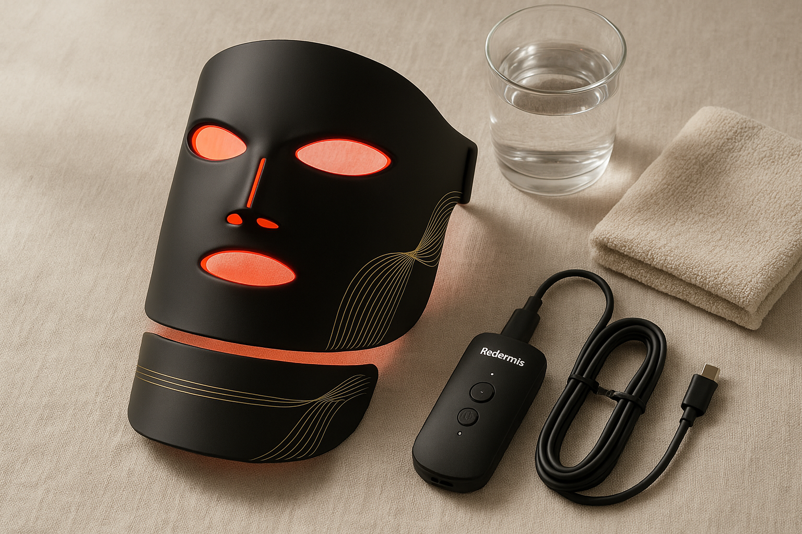
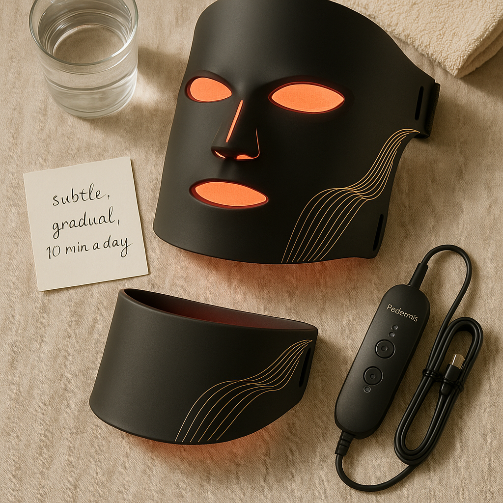
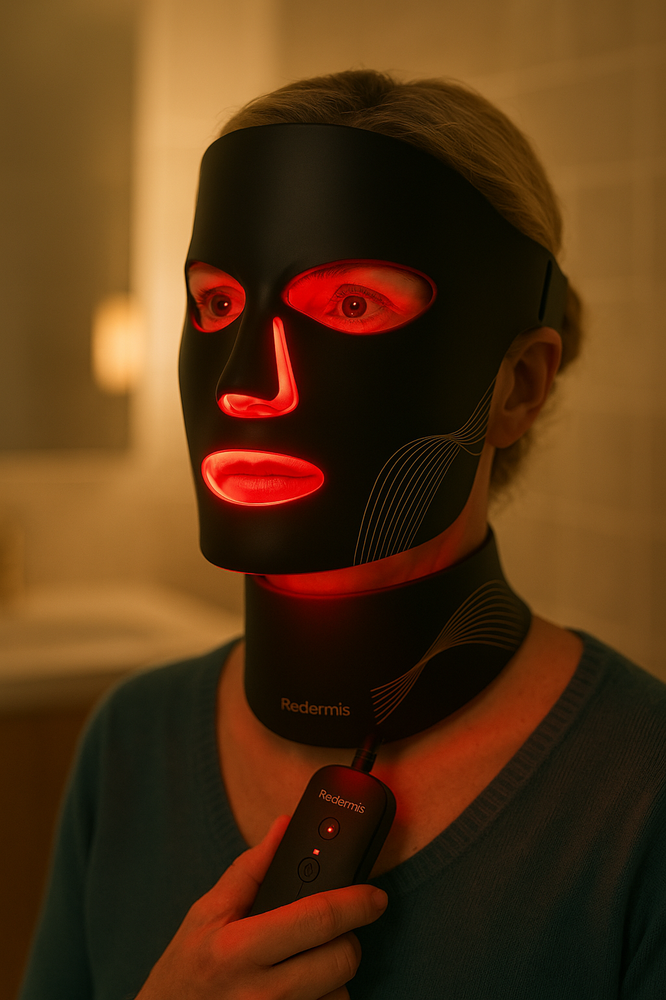

Review below. Reply approve to publish the Facebook post, or tell me edits.

If you have ever scrolled past an LED mask ad promising to "erase wrinkles in days" and rolled your eyes, good. That instinct is healthy. Most LED mask marketing over-promises so hard that scepticism is the correct place to start. So we are not going to sell you a miracle here. We are going to give you a straight answer to a fair question: does an LED face mask actually do anything?
Yes, there is a real mechanism behind LED skincare. No, it is not instant, and it is not a wrinkle-eraser.
LED light therapy has a genuine, well-studied basis. It is also slow, subtle, and entirely dependent on you using it consistently. If you want a single dramatic before-and-after by Friday, an LED mask is the wrong tool and any brand telling you otherwise is not being straight with you. If you want a low-effort habit that supports your skin over months, it earns its place. That is the whole truth, and the rest of this guide just explains why.
The proper name is photobiomodulation. Stripped of the jargon, it means this: certain wavelengths of visible light, delivered to the skin at the right dose, can gently nudge skin cells toward more of their normal housekeeping activity. Light is energy, and skin cells respond to specific colours of it.
Different colours reach different depths and do different jobs:
Red is the wavelength most associated with the "anti-ageing" conversation. It penetrates a little deeper and is studied for supporting the skin's own collagen processes and overall radiance over time. This is the workhorse colour for skin maintenance.
Blue sits more on the surface and is best known in the context of breakout-prone, congested skin. Shorter wavelength, shallower reach, different purpose.
Between those two ends sits a spectrum. The Redermis mask runs seven colours in total, because the primaries (red, green and blue) can be combined to produce yellow, purple, cyan and white. Mixing 520nm green with 630nm red gives yellow. Blue plus red gives purple. All three together read as white. It is the same RGB logic your screen uses, applied to skincare.
What makes the dose meaningful is coverage. The mask carries 70 RGB chips across the face panel and 33 across the neck, and because each chip projects multiple emission points, that works out to 309 emission points blanketing the face and neck at once. The neck matters here, because it ages alongside the face and is routinely ignored by skincare that stops at the jawline.
For years, anti-ageing was sold as a fight. Something to attack, erase, reverse, defeat. That framing is exhausting and, frankly, it sets you up to feel like you are losing.
The more honest and more useful way to think about a tool like this is skin longevity. Maintenance. You are not undoing twenty years overnight. You are giving your skin a small, regular input that supports collagen and barrier function, the structures that keep skin looking resilient, so that it ages on a gentler curve. It is closer to flossing or sunscreen than to a facelift: unglamorous, cumulative, and worth it precisely because you keep showing up.
Here is the part the ads skip. Results from LED are subtle and gradual, and they are built almost entirely on consistency.
The routine is genuinely small: about 10 minutes a day, three to five times a week. The payoff is measured in weeks, not days. Most people are looking at a sense of skin feeling a little smoother or looking a little more even before anything dramatic, and the changes are the kind you notice in a quiet "my skin has been behaving lately" way rather than a gasp in the mirror.
If that sounds underwhelming, it is supposed to. Slow and real beats fast and fictional.
We would rather you know the limits before you buy than feel misled after. So, plainly, an LED mask is not:
And the most important line: this is a cosmetic device, not a medical treatment. If you have a specific skin or health concern, the right move is a chat with your GP or dermatologist, not a gadget bought online.
Here is our honest position. Redermis is new. We do not yet have a wall of reviews to point you to, and we are not going to invent any. That actually shapes how we talk to you: when you cannot lean on social proof, the only thing left to offer is the truth.
We would genuinely rather you arrive with calibrated expectations and be quietly pleased in a couple of months than arrive expecting magic and feel let down in a week. Under-promising is not a clever tactic for us. At this stage it is the only fair way to introduce ourselves. A device this specific, 309 emission points across seven wavelengths, charged over USB-C in four to five hours, used ten minutes a day, deserves to be described accurately. The spec is real. So are the limits. Both are on the table on purpose.
If that kind of straight talk is what you were hoping to find, you are probably the right sort of customer for us.
See the full spec and what to realistically expect on the product page, and decide for yourself.
If you want a closer look, see the Redermis LED mask and the full spec here, then judge it against everything above.

We will be honest with you: an LED mask will not erase a wrinkle by Friday.
Your feed is full of overnight before-and-afters. Please do not trust them. That is not how light works, and it is not how skin works.
Here is the plain version. LED uses different wavelengths of light. Red sits in the longer-term, skin-maintenance story, and across 7 colours the combinations target different things. Ours runs in 10 minutes a day, a few times a week. The change is real but it is subtle and gradual, the kind you notice over months, not mornings.
What it cannot do: it will not lift, fill, or replace what a needle or a peel does.
We are a new Australian brand still earning our reviews, so we would honestly rather under-promise. Think skin longevity, not a quick fix.
If you ever want a closer look, the mask and the full spec are here: https://redermis.com.au/products/medical-grade-silicone-7-wevelenghts-photon-led-mask-face-and-neck-red-light-therapy-flexible-facial-mask-repair-skin-wireless-use
What is the one thing you have always wondered about LED masks? Ask below and we will answer honestly.
## Hashtags
#LEDmask #skinlongevity #honestskincare #AustralianBrand

Sceptical about LED masks? Good. So were we.
Most before-and-afters online are too good to be true.
Here is the unglamorous truth:
It works on light, not magic. 7 colours, 309 emission points, red light for the long game.
Subtle, gradual, 10 minutes a day. Skin longevity, not a weekend miracle.
It cannot fill a line. It cannot replace your derm. We will always tell you that.
What it can do is give your skin a consistent, gentle daily habit, the kind that adds up quietly over months.
No hype. No fake countdowns. Just an honest device at an honest price.
The mask and the full spec are on our site, link in bio if you want a look.
CTA: Honest questions get honest answers. Drop yours in the comments.
## Hashtags
#ledmask #redlighttherapy #skinlongevity #photobiomodulation #honestskincare #skinhealth #ledtherapy #skincareroutine #australianskincare #glowup2026 #skinmaintenance #antiageingrealtalk